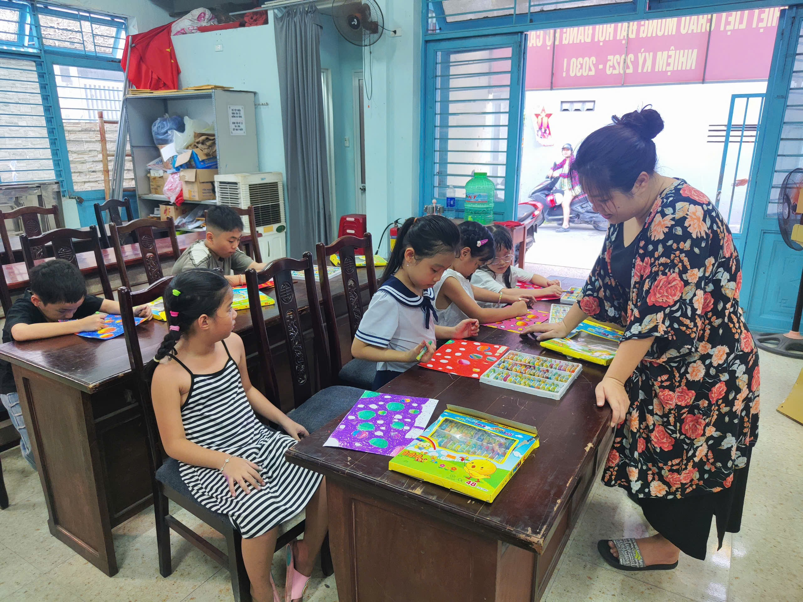
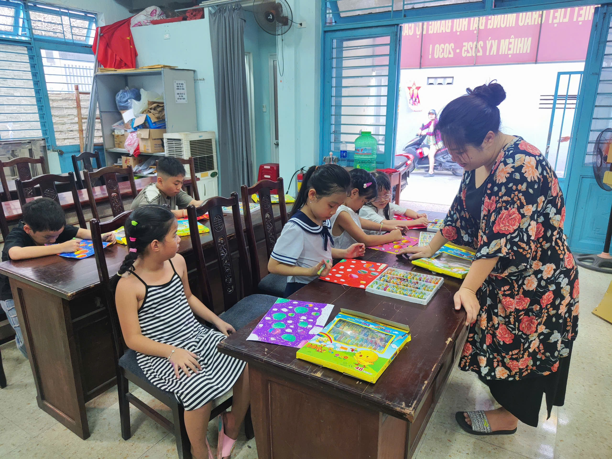

🎨 Lúc 15giờ00, ngày 07/6/2025 * đã khai giảng lớp vẽ hè 2025
dành cho học sinh Cấp 1 & Cấp 2.
🕒 Thời gian học: 15h30 – 17h00 chiều thứ Bảy hàng tuần
📆 Lịch học: Từ tháng 6 đến trước khai giảng năm học mới
💰 Học phí: MIỄN PHÍ 100%
📷 Hình ảnh khai giảng lớp vẽ:


 
